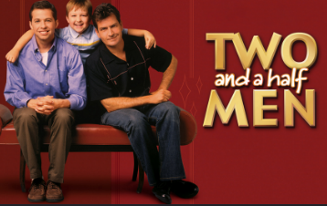

Two and A half Men
A primeira temporada de Two and a Half Men (dois homens e meio), sitcom americana criada por Chuck Lorre e Lee Aronsohn, estreou no dia 22 de setembro de 2003 às 21h30 (ET/PT) nos EUA pelo canal CBS. No Brasil, a série estreou no dia 5 de Janeiro de 2004 pelo canal a cabo Warner Channel. O episódio piloto recebeu boas críticas e também uma indicação ao Artios Award na categoria de melhor elenco para TV - episódio piloto.
Na semana do dia 1 de outubro de 2003, a série ficou na sétima posição na lista das dez séries mais assistidas de acordo pela Nielsen Ratings. Graças a isso a primeira temporada ganhou mais 23 episódios e a série ganhou mais uma temporada. O DVD desta temporada foi lançado no dia 12 de setembro de 2005 na Zona 2 e na Zona 1 no dia 11 de Setembro de 2007. No DVD, os extras incluídos são os erros de gravações, um tour pelos bastidores com Angus T. Jones e uma entrevista com os criadores e elenco de Two and a Half Men.
Produção
A série se passa na cidade de Malibu, na região da Califórnia, mas mesmo assim, as filmagens se passam em Burbank, Los Angeles nos Estúdios Warner Brothers. No elenco estão os atores Charlie Sheen como Charlie Harper, Jon Cryer como Alan Harper, Angus T. Jones como Jake Harper, Holland Taylor como Evelyn Harper, Melanie Lynskey como Rose e Marin Hinkle como Judith Harper.
A atriz Conchata Ferrell, durante esta temporada, fez algumas aparições mas a partir da segunda, ela começou a fazer parte do elenco principal. A canção-tema foi escrita pelo criador da série, Chuck Lorre. Lorre afirmou temporadas depois que a canção não era cantada por Sheen, Cryer e Jones como é mostrado na abertura. Ela foi interpretada por cantores profissionais, sendo que um deles foi pela atriz Elizabeth Daily (que provavelmente fez a voz de Jones).
Seleção do elenco
Originalmente, a atriz Blythe Danner foi escalada para interpretar a personagem Evelyn Harper, mas quando ela começou a dar sugestões para as cenas, os produtores a demitiram. Um dos chefes constatou que ela é uma atriz maravilhosa, mas não para o personagem que escolheram. "Most Chicks Won't Eat Veal", o episódio piloto original, com Blythe Danner sendo Evelyn Harper não foi transmitido.
Charlie Sheen foi contratado porque os criadores o viram na série Spin City, o qual ele também interpretava um solteiro que tinha medo de assumir relações sérias. Spin City se tornou um sucesso, e isso foi mais uma grande alavanca para a carreira de Sheen. Antes de trabalharem juntos na série, Jon Cryer e Charlie Sheen tinham feito o filme Hot Shots! em 1991 (assim como Ryan Stiles que apareceria na segunda temporada fazendo o Dr. Herb Melnick)

Episódios
| Temporada | Episódios | Título | Dirigido por | Escritor | Exibição original |
|---|---|---|---|---|---|
| 1 | 1 | Pilot - "Piloto" | James Burrows | Chuck Lorre e Lee Aronsohn | 22 de setembro de 2003 |
| 2 | 2 | Big Flappy Bastards - "Ímbecis de Asas" | Andy Ackerman | História: Chuck Lorre e Lee Aronsohn Roteiro: Eddie Gorodetsky e Jeff Abugov | 29 de setembro de 2003 |
| 3 | 3 | Go East on Sunset Until You Reach the Gates of Hell - "Vá para o Inferno" | Andy Ackerman | História: Chuck Lorre e Don Foster Roteiro: Lee Aronsohn e Mark Roberts | 6 de outubro de 2003 |
| 4 | 4 | If I Can't Write My Chocolate Song, I'm Going to Take a Nap - "Se Não Dá pra Compor, Vou Tirar Uma Soneca" | Andy Ackerman | História: Chuck Lorre e Lee Aronsohn Roteiro: Susan Beavers e Don Foster | 20 de outubro de 2003 |
| 5 | 5 | The Last Thing You Want to Do Is Wind Up with a Hump - "Quer Acabar Corcunda?" | Andy Ackerman | História: Chuck Lorre e Lee Aronsohn Roteiro: Eddie Gorodetsky e Jeff Abugov | 20 de outubro de 2003 |
| 6 | 6 | Did You Check with the Captain of the Flying Monkeys? - "Você Procurou Direito?" | Andy Ackerman | História: Chuck Lorre e Lee Aronsohn Roteiro: Susan Beavers e Don Foster | 27 de outubro de 2003 |